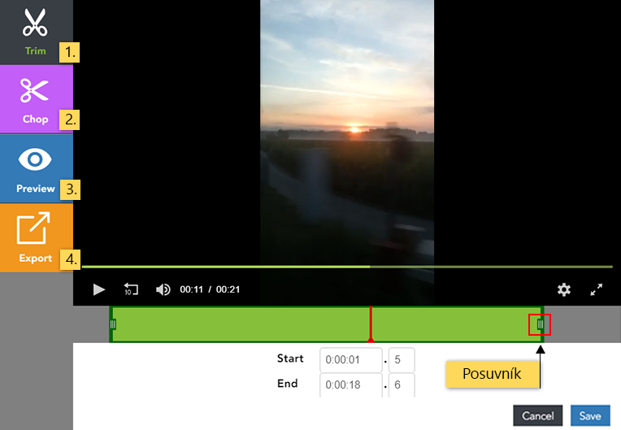
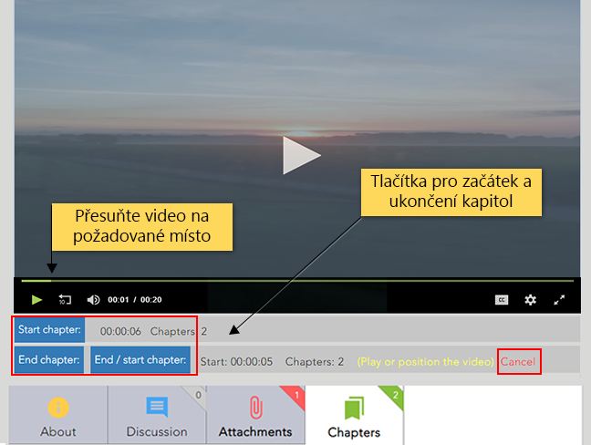

Úprava nahrávek¶
I poté, co jste nahrávku do Medialu vložili, ji můžete poměrně volně upravovat. V tomto návodu se dozvíte, jak dodatečně editovat veškeré informace, které jste vyplnili při vkládání nahrávky do knihovny, jak video ořezat nebo u nahrávky nastavit kapitoly.
Editace metadat¶

Do rozhraní pro editaci metadat se dostanete ze stránky “My Content” pomocí ikonky tužky v pravém krajním sloupci. Editace Vám znovu zpřístupní formulář, který jste vyplňovali při vkládání nahrávky, a umožní Vám veškeré údaje změnit. Mezi jednotlivými položkami formuláře (podrobně jsou popsány v tomto návodu) se můžete volně pohybovat pomocí záložek a navigačních tlačítek “Back” (Zpět) a “Next” (Další). Editaci ukončíte kliknutím na tlačítko “Finish” na záložce “Confirm”.
Pozor! Pro uložení změn provedených na jednotlivých záložkách je třeba kliknout na tlačítko “Next”. Pouhým přepnutím na záložku “Confirm” a stisknutím tlačítka “Finish” se změny neuloží.

V rámci úprav můžete nahradit i soubor s nahrávkou – například pokud jste do Medialu vložili nesprávnou nahrávku nebo máte k dispozici její novější verzi. Stačí na záložce “File” kliknout na tlačítko “Browse” (pro výběr nového souboru z počítače) nebo “Record webcam” (pro pořízení nového záznamu pomocí webkamery). Pomocí ikony nůžek vedle názvu videa lze nahrávku ořezat, vyjmout některé části nebo exportovat. Všechna vyplněná metadata zůstanou zachována. Nezapomeňte, že systém bude muset nový soubor znovu zpracovat.
Editace nahrávky¶
Po kliknutí na ikony nástrojů (viz obr.2), se otevře panel umožňující editaci nahrávky. Zde můžete přepínat mezi “Trim” (ořez), “Chop” (výřez), “Preview” (náhled) a “Export” (uložení nahrávky).

- Oříznutí videa (Trim): Umožňuje odstranit část nahrávky z jejího začátku nebo konce. Zelené pole značí část nahrávky, která zůstane zachována. Tahem jednoho z posuvníků si délku nahrávky přizpůsobíte. Druhým způsobem, jakým lze oblast označit, je pomocí časového údaje. Do kolonky pod videem napíšete, od které vteřiny či minuty má video začít (Start) a kde se má ukončit (End).
- Výřez části videa (Chop): Nechte nahrávku přehrát (nebo myší přetáhněte) do místa, které chcete vyjmout. Kliknutím na tlačítko “Add” se objeví modré pole, které značí, co bude z nahrávky odstraněno. Velikost modrého pole můžete přizpůsobit tahem myší nebo časovými údaji v kolonce. Úseků, které lze z nahrávky odstranit může být více. Stačí přetáhnout červený ukazatel na jinou část nahrávky a opět kliknout na tlačítko “Add”.
- Náhled (Preview): Slouží k náhledu, kde lze video přehrát a zkontrolovat jak výsledná nahrávka vypadá. Poté je možné se zpět vrátit k editace.
- Export: umožňuje uložit klip (nebo jeho části) jako samostatnou nahrávku do Medialu. Před uložením změn je tedy možné skrz ikonu export uložit části z původního videa beze změn. Obdobně jako u předchozích funkcí, přetáhnete červený ukazatel na potřebné místo v nahrávce a tlačítkem “Add” se žlutě označí část videa, která bude exportována.
Po kliknutí na tlačítko pro uložení “Save”, vyskočí okno, kde máte možnost upravit název editované nahrávky (Title on new version). Při zakliknutí kolonky “Keep original video” se původní video, ve stavu před editací, uloží jako nová nahrávka a zároveň lze upravit její název (Title on original version) i kategorii, komu bude video přístupné (Category for original version).
Jak u nahrávek nastavit kapitoly¶
U nahrávek, které již byly zpracovány a zpřístupněny v knihovně médií, můžete nastavit také kapitoly umožňující divákům při přehrávání přeskočit na předem daná místa. Kapitoly lze vytvářet na stránce pro přehrávání videa:
- Přepněte na záložku “Chapters” umístěnou pod přehrávačem.
- Vyberte přístup k zobrazení kapitol (viz obr. 5) mezi “Global” (ke kapitolám budou mít přístup všichni, kteří mají přístup k videu) a “Private” (kapitoly budou přístupny pouze vám).
- Zastavte video v čase, pro který chcete nastavit začátek kapitoly, a stiskněte tlačítko “Start chapter”.
- Nyní nahrávku zastavte v čase, kdy by měla kapitola končit, a stiskněte tlačítko “End chapter” případně “End/start chapter” pokud chcete navázat další kapitolou.
- Tlačítkem “Cancel” ukončíte editaci upravované kapitoly.

Obr. 4: Nastavení časových hranic kapitoly -
Pokud chcete kapitoly přenastavit nebo odstranit klikněte na popelnici pod kapitolou. Pokud jste s nastavením kapitoly spokojeni, můžete přidat Název kapitoly a Popis.

Obr. 5: Finální nastavení kapitoly. -
Další kapitoly můžete přidávat stejným způsobem.